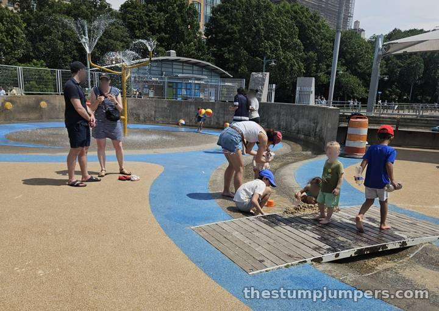
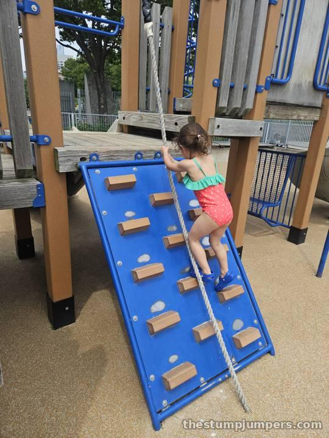

Pier 51 is like a smaller and more modern version of River Run, built out on a pier. It's newer, cleaner, and more colorful. Like River Run, it has a stream running through the middle — this one is a nod to Minetta Brook, an old Manhattan stream that still runs underground — with little bronze fish, turtles, and crabs set along the way.

Kids love that stream. They dam it up with sand, float things down it, and then dam it up again. It's hydraulic engineering for the preschool set, and it can keep a crew busy for a long time.
It sits just a little south of Little Island, and it's actually hard to find on the map because it gets confused with its famous neighbor. Once you're on the right pier, you'll see it.
Being on a windy pier and built around water features, I can't imagine it would be much fun at all when it's cold out. This is a summer playground through and through.
Verdict: if you're in the area, it's worth stopping. But it's kind of small, so I wouldn't go out of my way to check it out.
By bike: right on the Hudson River Greenway at Jane Street, just south of Little Island. On the run: a good stop on a Greenway run through the West Village. By train: A, C, E, or L to 14 St–8 Av, or the 1 to Christopher St, then walk west to the river at Jane Street.